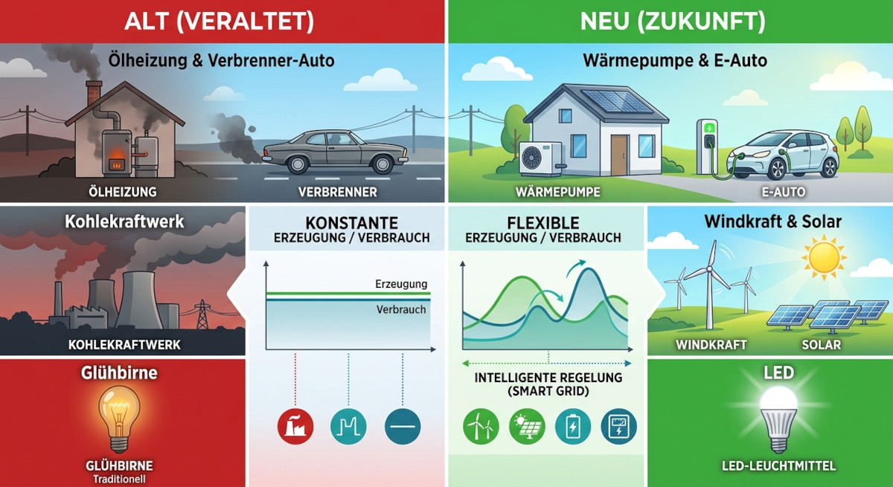
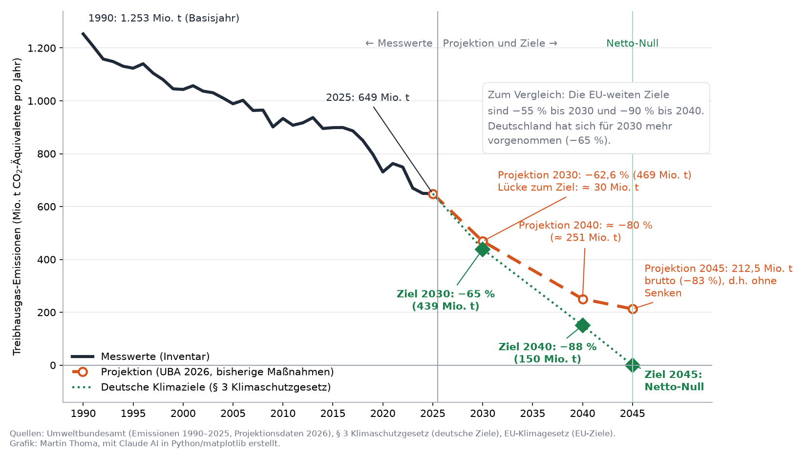
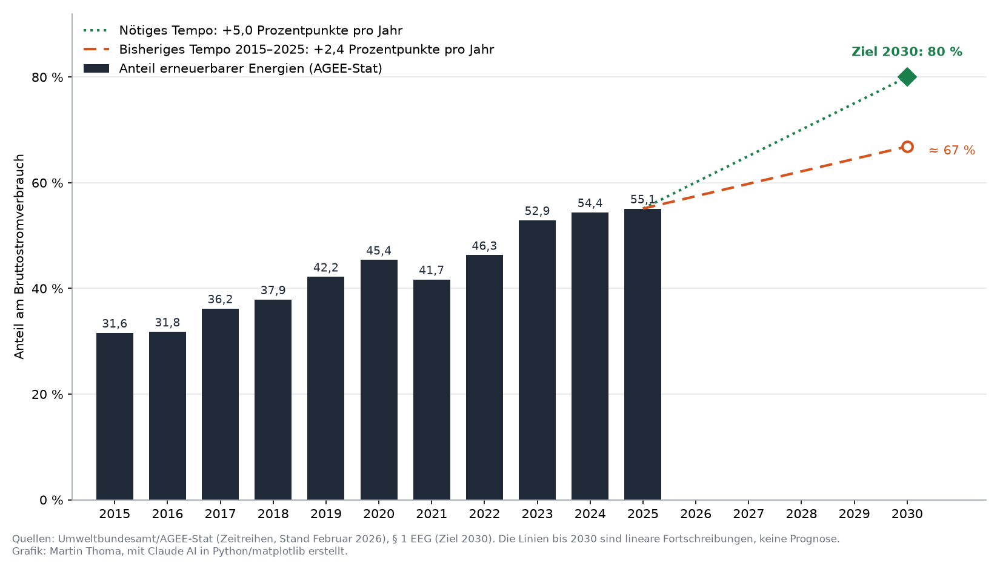
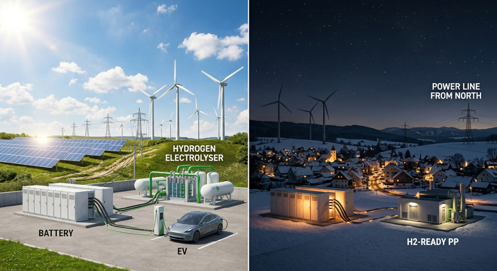
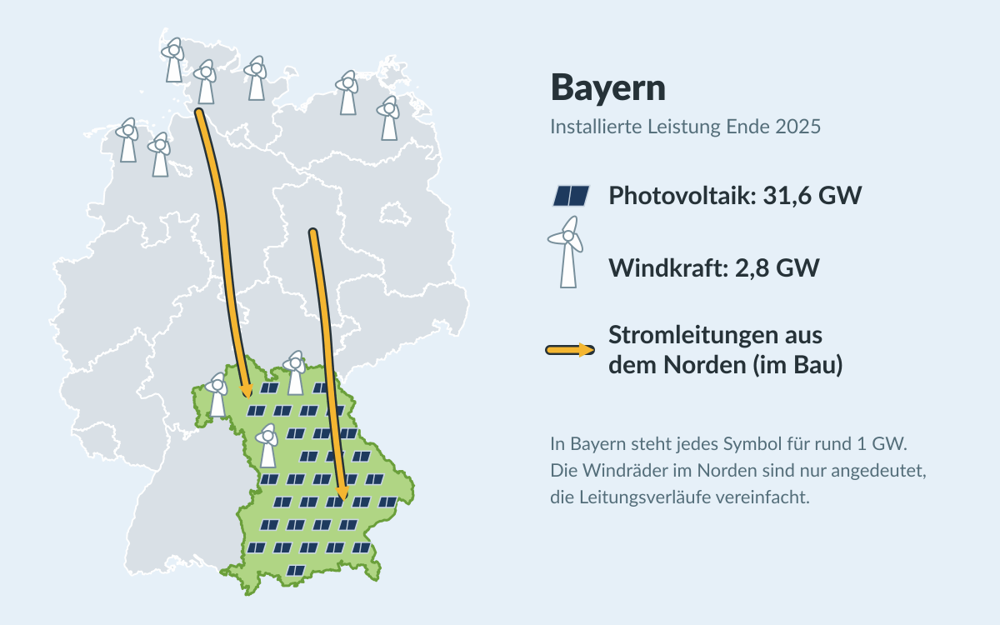
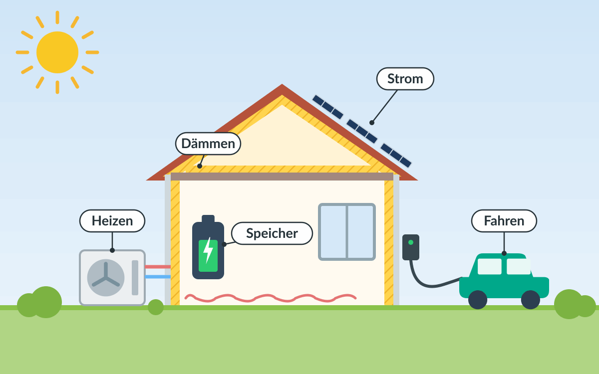

Die Energiewende ist das wohl wichtigste internationale Projekt. Es bezeichnet den strukturellen und nachhaltigen Wandel weg von fossilen Energieträgern hin zu erneuerbaren Energien.


Die Energiewende hat folgende essenziellen Bausteine. Ihre Symbole tauchen im Überblick und bei den Vorschlägen wieder auf:
⚡Elektrifizierung
Insbesondere Verkehr und das private Heizen müssen weg von Diesel, Benzin, Heizöl und Erdgas hin zu Strom aus erneuerbaren Quellen.
Die letzten Jahre haben gezeigt, wie anfällig die fossile Energieversorgung ist: Nach dem russischen Angriff auf die Ukraine fiel günstiges Gas aus Russland weg, seit Anfang 2025 fließt auch kein russisches Gas mehr durch die Ukraine nach Europa[1]. Nach dem Angriff der USA auf den Iran blockiert der Iran die Straße von Hormus, und nach Drohnenangriffen aus dem Irak hat Saudi-Arabien im September 2026 seine wichtige Ost-West-Pipeline abgeschaltet. Das treibt die Öl- und Benzinpreise[2].
Strom aus Wind und Sonne wird dagegen im eigenen Land erzeugt. Elektrische Antriebe und Wärmepumpen sind außerdem deutlich effizienter: Ein E-Auto braucht für dieselbe Strecke nur etwa ein Drittel der Energie eines Verbrenners, eine Wärmepumpe macht aus einer Kilowattstunde Strom drei bis vier Kilowattstunden Wärme.
☀️Erneuerbare Energien
Die nahezu vollständige Umstellung der Energiegewinnung auf erneuerbare Quellen wie Wind, Solar, Wasserkraft und Umweltwärme.
Beim Strom ist Deutschland schon weit, aber nicht am Ziel: 2025 stammten noch rund 22 % der öffentlichen Nettostromerzeugung aus Braun- und Steinkohle und 12,5 % aus Erdgas[3]. Bei Wärme und Verkehr ist der Anteil der Erneuerbaren noch viel kleiner (siehe EU).
🔀Flexibilisierung
Einerseits physische Energiespeicher wie Batterien, Pumpspeicherkraftwerke und Power-to-X (z.B. Wasserstoff aus Überschussstrom), andererseits flexible Lasten, die den Verbrauch dynamisch an das Angebot anpassen. Hinzu kommt ein leistungsfähiges Stromnetz, um Energie über große Distanzen zu transportieren und regionale Unterschiede in Erzeugung und Verbrauch auszugleichen.
💡Energieeffizienz
Die Reduzierung des Energieverbrauchs, z.B. durch effizientere Technologien (Glühbirne → LED; Heizöl → Wärmepumpe; Verbrennungsmotor → Elektroantrieb) und durch bessere Dämmung von Gebäuden.
Dieses Gesamtpaket umzusetzen ist eine enorme Herausforderung auf allen politischen Ebenen. Deshalb gehe ich die Ebenen von oben nach unten durch: international, EU, Bund, Länder (am Beispiel Bayern), Kommunen (am Beispiel Plattling), Unternehmen und private Haushalte. Auf jeder Ebene schaue ich, was bereits passiert ist und was noch fehlt. Für Bayern, Plattling, Unternehmen und Haushalte ergänze ich Vorschläge, was besser laufen könnte.
So liest sich der Artikel: Jeder Eintrag lässt sich aufklappen und zeigt dann Details und Quellen. Die farbige Pille rechts zeigt den Stand:
- ✅ Umgesetzt bzw. in Kraft
- ⏳ Beschlossen oder in Arbeit, aber das Ziel ist noch nicht erreicht
- ❌ Fehlt
- ↩️ Rückschritt: Etwas Beschlossenes wurde abgeschwächt oder zurückgenommen
Überblick: Wer ist wofür zuständig?
Jede Ebene setzt bei den vier Bausteinen an anderen Stellen an. Die folgenden Abschnitte gehen die Ebenen in derselben Reihenfolge durch.
🌍International
☀️ Erneuerbare Energien: Ausbauziele, z.B. die Verdreifachung der erneuerbaren Kapazität bis 2030 (COP28).
💡 Energieeffizienz: Effizienzziele, z.B. die Verdopplung der jährlichen Effizienzsteigerung bis 2030.
Verbindlich ist davon wenig: Jedes Land entscheidet selbst, wie viel es beiträgt.
Mehr dazu: International
🇪🇺EU
⚡ Elektrifizierung: CO₂-Flottengrenzwerte für Neuwagen und der CO₂-Preis über den Emissionshandel, ab 2028 auch für Gebäude und Verkehr.
☀️ Erneuerbare Energien: Ausbauziele und das Strommarktdesign mit Differenzverträgen.
🔀 Flexibilisierung: Regeln für den europäischen Strommarkt und grenzüberschreitende Netze.
💡 Energieeffizienz: Energieeffizienz-Richtlinie und Gebäuderichtlinie.
Mehr dazu: Europäische Union
🇩🇪Bund
⚡ Elektrifizierung: Förderung, z.B. für E-Autos, Steuern und Abgaben auf Strom, der nationale CO₂-Preis und die Regeln für neue Heizungen.
☀️ Erneuerbare Energien: Das EEG mit Vergütung und Ausschreibungen, Flächenziele für Windkraft und das Genehmigungsrecht.
🔀 Flexibilisierung: Netzausbau, neue Kraftwerke, Speicher, Wasserstoff und der Smart-Meter-Rollout.
💡 Energieeffizienz: Gebäuderecht, Förderung von Sanierungen und das Energieeffizienzgesetz.
Mehr dazu: Bund
🗺️Länder
☀️ Erneuerbare Energien: Flächen für Windkraft über die Regionalpläne, Abstandsregeln wie die bayerische 10H-Regel und Solarpflichten.
💡 Energieeffizienz: Die Landesbauordnung.
Mehr dazu: Länder
🏘️Kommunen
⚡ Elektrifizierung: Ladesäulen, ÖPNV und der eigene Fuhrpark.
☀️ Erneuerbare Energien: Bebauungspläne und Flächen für Solar- und Windparks, PV auf den eigenen Dächern.
🔀 Flexibilisierung: Stadtwerke und Wärmenetze.
💡 Energieeffizienz: Die kommunale Wärmeplanung und die eigenen Gebäude.
Mehr dazu: Kommunen
🏭Unternehmen
⚡ Elektrifizierung: Prozesswärme und Fuhrpark.
☀️ Erneuerbare Energien: Eigene PV-Anlagen und Stromabnahmeverträge (PPA) mit Wind- und Solarparks.
🔀 Flexibilisierung: Lastmanagement und Speicher.
💡 Energieeffizienz: Effizientere Prozesse und Abwärmenutzung.
Mehr dazu: Unternehmen
🏠Haushalte
⚡ Elektrifizierung: Wärmepumpe und E-Auto.
☀️ Erneuerbare Energien: PV-Anlage oder Balkonkraftwerk.
🔀 Flexibilisierung: Dynamischer Stromtarif und Heimspeicher.
💡 Energieeffizienz: Dämmung und sparsame Geräte.
Mehr dazu: Private Haushalte
International
Auf internationaler Ebene geht es vor allem um Ausbau- und Effizienzziele. Sie sind der Rahmen für alles Weitere.
Erwärmung deutlich unter 2 °C, möglichst 1,5 °C ⏳
Pariser Klimaabkommen (2015)
In Kraft seit 2016. Jeder Staat legt alle fünf Jahre selbst fest, wie stark er seine Emissionen senken will (Nationally Determined Contributions, NDC). Strafen für verfehlte Ziele gibt es nicht.
Die 1,5-°C-Grenze wird voraussichtlich überschritten. Mit der aktuellen Klimapolitik steuert die Welt laut Vereinten Nationen bis Ende des Jahrhunderts auf 2,8 °C Erwärmung zu[4].
Austritt der USA aus dem Pariser Klimaabkommen ↩️
Wirksam seit dem 27. Januar 2026. Die USA sind nach China der zweitgrößte Emittent von Treibhausgasen. Die UN schätzen, dass der Austritt die Erderwärmung um etwa 0,1 °C erhöht[4].
COP28 ⏳
Weltklimakonferenz in Dubai 2023: Abkehr von fossilen Energieträgern, Verdreifachung der erneuerbaren Kapazität und Verdopplung der Effizienzsteigerung bis 2030.
Beschlossen, aber nicht verbindlich: Wie viel jedes Land dazu beiträgt, entscheidet es selbst.
Fahrplan für den Ausstieg aus Kohle, Öl und Gas (COP30) ❌
Europäische Union
Die EU setzt mit CO₂-Preisen, Flottengrenzwerten, Ausbau- und Effizienzzielen und dem Strommarktdesign den Rahmen für die Mitgliedstaaten.
−55 % Treibhausgase bis 2030, klimaneutral bis 2050 ✅
Europäisches Klimagesetz[6] · Baustein: Alle
Seit 2021 in Kraft. Das Ziel gilt für die EU als Ganzes. Wie es erreicht wird, regeln vor allem der Emissionshandel (Strom, Industrie, ab 2028 auch Gebäude und Verkehr) und die Lastenteilung (Effort Sharing): Sie gibt jedem Mitgliedstaat ein eigenes Budget für Gebäude, Verkehr, Landwirtschaft und Abfall vor.
Klimaziel 2040: −90 % gegenüber 1990 ✅
Emissionshandel ETS 1 für Strom und Industrie ✅
Baustein: Erneuerbare
Seit 2005. Kraftwerke und große Industrieanlagen brauchen für jede ausgestoßene Tonne CO₂ ein Zertifikat. Die Gesamtmenge der Zertifikate sinkt jedes Jahr. Dadurch wird Strom aus Kohle und Gas teurer, und Wind- und Solarstrom setzen sich am Markt durch.
ETS 2: CO₂-Preis für Gebäude und Verkehr ⏳
CO₂-Grenzausgleich (CBAM) ✅
Baustein: Alle
Seit 2026 müssen Importeure für die CO₂-Emissionen z.B. von Stahl, Zement, Aluminium und Dünger bezahlen. So haben europäische Hersteller, die CO₂-Zertifikate kaufen müssen, keinen Nachteil gegenüber Importen aus Ländern ohne CO₂-Preis.
42,5 % Erneuerbare am Endenergieverbrauch bis 2030 ⏳
Erneuerbare-Energien-Richtlinie (RED III) · Baustein: Erneuerbare
Die Richtlinie legt fest, welcher Anteil der gesamten Energie, die in der EU verbraucht wird, aus erneuerbaren Quellen kommen soll, also bei Strom, Wärme und Verkehr zusammen. 42,5 % bis 2030 sind verbindlich, 45 % sind angestrebt. Außerdem müssen die Mitgliedstaaten Beschleunigungsgebiete ausweisen, in denen Wind- und Solaranlagen schneller genehmigt werden. Die Frist für die Umsetzung in nationales Recht endete im Mai 2025.
Beschlossen 2023. Deutschland kam 2025 auf 23,8 %. Beim Strom sind es nach der Rechenweise der Richtlinie 58,7 %, bei Wärme und Kälte aber nur 18,9 % und im Verkehr 11,3 %[8].
−11,7 % Endenergieverbrauch bis 2030 ⏳
Energieeffizienz-Richtlinie · Baustein: Effizienz
Beschlossen 2023. Der Endenergieverbrauch der EU soll bis 2030 um mindestens 11,7 % sinken. Außerdem gilt „Energieeffizienz an erster Stelle“ als Grundprinzip: Bevor neue Kraftwerke oder Leitungen geplant werden, ist zu prüfen, ob sich der Bedarf durch Einsparungen senken lässt[9].
Deutschland setzt die Richtlinie gerade um und schwächt dabei sein eigenes, strengeres Energieeffizienzgesetz ab (siehe Unternehmen).
Neubauten ab 2030 emissionsfrei ⏳
Gebäuderichtlinie (EPBD) · Baustein: Effizienz
Ab 2030 müssen alle neuen Gebäude Nullemissionsgebäude sein, neue öffentliche Gebäude schon ab 2028. Sie dürfen dann vor Ort keine fossilen Brennstoffe mehr verbrennen und müssen sehr wenig Energie brauchen. Im Bestand soll der Energieverbrauch von Wohngebäuden bis 2035 um 20 bis 22 % sinken. Öl- und Gasheizungen dürfen nicht mehr gefördert werden.
Beschlossen 2024. Die Mitgliedstaaten mussten die Richtlinie bis Mai 2026 in nationales Recht umsetzen.
Ab 2035 nur noch emissionsfreie Neuwagen ↩️
CO₂-Flottengrenzwerte · Baustein: Elektrifizierung
Bisher gilt: Ab 2035 müssen die Neuwagen eines Herstellers im Schnitt 100 % weniger CO₂ ausstoßen als 2021, es dürfen also praktisch nur noch E-Autos neu zugelassen werden.
Die EU-Kommission hat im Dezember 2025 vorgeschlagen, das Ziel für 2035 auf −90 % abzuschwächen[10]. Damit dürften z.B. Plug-in-Hybride weiter verkauft werden. Parlament und Rat haben noch nicht entschieden; der Berichterstatter des Parlaments hat im April 2026 weitere Abschwächungen vorgeschlagen[11].
Reform des Strommarktdesigns (Differenzverträge) ✅
Baustein: Erneuerbare, Flexibilisierung
Beschlossen 2024. Kern der Reform: Fördert ein Staat neue Wind-, Solar-, Geothermie-, Wasser- oder Kernkraftwerke direkt, muss er dafür zweiseitige Differenzverträge (Contracts for Difference, CfD) nutzen[12]. Der Betreiber bekommt einen festen Preis pro Kilowattstunde. Liegt der Marktpreis darunter, zahlt der Staat die Differenz. Liegt er darüber, muss der Betreiber die Mehreinnahmen zurückzahlen, und der Staat kann sie an die Stromkunden weitergeben[12].
Das bringt zweierlei: Betreiber haben sichere Einnahmen, dadurch werden Kredite und damit neue Wind- und Solarparks günstiger. Und in einer Energiekrise wie 2022 landen die Übergewinne nicht bei den Betreibern, sondern kommen den Verbrauchern zugute. Außerdem stärkt die Reform langfristige Stromlieferverträge (PPA, siehe Unternehmen). Deutschland setzt die Differenzverträge mit der EEG-Novelle ab 2027 um (siehe Bund).
ReFuelEU Aviation ⏳
Baustein: Power-to-X
Flugzeuge, die in der EU starten, müssen einen Mindestanteil synthetischer Kraftstoffe (E-Kerosin) tanken. E-Kerosin wird aus grünem Wasserstoff und CO₂ hergestellt.
In Kraft seit 2024: 1,2 % ab 2030, 5 % ab 2035. Bisher gibt es in Europa nur Pilotanlagen.
Bund
Der Bund ist für die meisten Gesetze und Förderungen zuständig: EEG, Flächenziele, Netzausbau, Kraftwerke, Gebäuderecht und Heizungsregeln.
Ziele
Klimaneutral bis 2045 ⏳
Seit 2021. Die Novelle 2024 hat die verbindlichen Jahresziele für einzelne Sektoren abgeschafft. Seitdem zählt nur noch, ob alle Sektoren zusammen im Rahmen bleiben. Verfehlt etwa der Verkehr sein Ziel, muss das Verkehrsministerium kein eigenes Sofortprogramm mehr vorlegen, solange andere Sektoren (vor allem die Energiewirtschaft) mehr einsparen.
Kohleausstieg spätestens 2038 ⏳
Gesetzlich festgelegt, im Rheinischen Revier schon 2030. Bis dahin werden Kohlekraftwerke schrittweise stillgelegt. 2025 kamen aber noch rund 22 % der öffentlichen Nettostromerzeugung aus Kohle[3].
80 % erneuerbarer Strom bis 2030 ⏳
2025 waren es 55,1 %[8] des Bruttostromverbrauchs.
Wie weit der Weg noch ist, zeigt der Verlauf der Emissionen: Seit 1990 sind sie um knapp die Hälfte gesunken[13]. Bis 2045 müssen sie auf netto null fallen. Das sind noch rund 20 Jahre, in denen die Emissionen um etwas mehr sinken müssen (649 Mio. t) als in den 35 Jahren davor (604 Mio. t)[13].


Wichtig beim Lesen der Grafik:
- Die Ziele (grün) sind die deutschen Ziele aus dem Bundes-Klimaschutzgesetz: −65 % bis 2030, −88 % bis 2040 und Netto-Treibhausgasneutralität bis 2045[15].
- Nicht verwechseln mit den EU-Zielen: Für die EU insgesamt gelten −55 % bis 2030[6] und −90 % bis 2040[7]. Deutschland hat sich für 2030 also mehr vorgenommen als die EU. Das deutsche Ziel für 2040 (−88 %) liegt dagegen knapp unter dem EU-weiten. Werden für die EU-Ziele höhere nationale Ziele nötig, muss die Bundesregierung sie anheben; senken darf sie sie nicht[15].
- Die Projektion (orange) ist keine Vorhersage, sondern zeigt, was mit den bis November 2025 beschlossenen Maßnahmen passiert[14]. Später abgeschwächte Regeln wie das Heizungsgesetz sind darin noch nicht berücksichtigt.
- Das Ziel für 2030 verfehlt die Projektion laut UBA um rund 30 Mio. t[14]. Weil Deutschland in den Vorjahren weniger ausgestoßen hat als erlaubt, hält es das Gesamtbudget für 2021 bis 2030 rechnerisch trotzdem knapp ein. Das UBA hält das aber nicht für gesichert: Schon etwas mehr Wirtschaftswachstum, weniger Förderung oder abgeschwächte Gesetze würden reichen[14]. Für 2040 sind es rund 100 Mio. t, weil die Projektion dort nur etwa −80 % statt −88 % erreicht[14].
- Unabhängig davon verfehlt Deutschland seine Pflichten aus der EU-Lastenteilung (vor allem Gebäude und Verkehr) für 2021 bis 2030 voraussichtlich um rund 255 Mio. t[14]. Die fehlende Menge muss Deutschland anderen Mitgliedstaaten abkaufen.
- „Netto-Null" heißt nicht, dass gar nichts mehr ausgestoßen wird: Restemissionen (z.B. aus der Landwirtschaft) müssen durch natürliche und technische Senken ausgeglichen werden. Die Projektion für 2045 (212,5 Mio. t) ist der Bruttowert ohne diese Senken[14].
Erneuerbare Energien
Beim Strom ist Deutschland schon weit: 2025 kamen 55,1 % des Bruttostromverbrauchs aus erneuerbaren Energien[8]. Für das Ziel von 80 % bis 2030 muss der Anteil aber jedes Jahr um rund 5 Prozentpunkte steigen. Das ist doppelt so schnell wie im Schnitt der letzten zehn Jahre (2,4 Prozentpunkte pro Jahr).
Die Photovoltaik wächst schnell: 2025 kamen 16,2 GW dazu, insgesamt waren Ende 2025 rund 117 GW installiert. Für die Klimaziele müsste der Zubau 2026 aber auf 22 GW steigen[3]. Bei der Windkraft hinkt Deutschland hinterher: Ende 2025 sollten 76,5 GW installiert sein, tatsächlich waren es 68,1 GW[3].


Wind-an-Land-Gesetz ⏳
2 % der Bundesfläche für Windkraft bis 2032, Zwischenziel 1,4 % bis 2027. Die Länder müssen dafür Flächen ausweisen, sonst entfallen dort die landeseigenen Abstandsregeln (in Bayern z.B. die 10H-Regel).
2025 kamen an Land 4,5 GW Windkraft dazu[3].
Windkraft auf See: 30 GW bis 2030 ⏳
Windenergie-auf-See-Gesetz
Der Ausbau kommt kaum voran: 2025 wurden auf See nur 0,29 GW zugebaut[3]. Im August 2025 gab es bei einer Ausschreibung für 2,5 GW in der Nordsee erstmals kein einziges Gebot. Gründe sind gestiegene Kosten und Zinsen, unsichere Strompreise und dicht gepackte Windparks, die sich gegenseitig den Wind wegnehmen[16].
Ende September 2026 hat die Bundesregierung eine Reform vorgelegt: Das Ziel von 30 GW bleibt, neue Windparks sollen 35 statt 25 Jahre laufen dürfen, und ab 2027 sollen jedes Jahr 2 bis 4,8 GW ausgeschrieben werden[17].
Solarpaket I ✅
Einfachere Balkonkraftwerke (bis 800 W) und Mieterstrom.
Seit 2024
EEG-Novelle ⏳
Neue PV-Anlagen unter 25 kW bekommen ab 2027 keine feste Einspeisevergütung über 20 Jahre mehr. Stattdessen müssen sie ihren Strom direkt vermarkten, also zum jeweiligen Börsenpreis verkaufen. Übergangsweise gibt es für höchstens drei Jahre eine feste Zahlung von rechnerisch 5,2 ct/kWh[18]. Größere Anlagen ab 100 kW bekommen Differenzverträge (siehe EU)[19]. Bestehende Anlagen behalten ihre Vergütung.
Vom Kabinett am 29. Juli 2026 beschlossen[18], erste Lesung im Bundestag am 24. September 2026[19]. Es soll am 1. Januar 2027 in Kraft treten. Die Solarbranche warnt, dass der Ausbau auf Hausdächern einbricht[18], und auch der Bundesrat fordert Nachbesserungen[19].
Flexibilisierung


Sonne und Wind liefern nicht immer dann Strom, wenn er gebraucht wird. Eine Dunkelflaute ist eine Phase mit wenig Wind und wenig Sonne, im Winter oft über mehrere Tage. Dann braucht es Speicher, steuerbare Kraftwerke, Stromimporte und Verbraucher, die ihren Verbrauch verschieben können. Außerdem muss der Strom vom Erzeugungsort zum Verbrauchsort kommen.
Stromnetzausbau ⏳
Zum Beispiel SuedLink und SuedOstLink.
Wind weht vor allem im Norden und auf See, viele große Verbraucher sitzen aber im Süden und Westen. Fehlen Leitungen, müssen Windräder im Norden abgeregelt und Kraftwerke im Süden hochgefahren werden (Redispatch). Das kostet laut Wirtschaftsministerium inzwischen mehr als 3 Mrd. € pro Jahr[18], die über die Netzentgelte alle Stromkunden zahlen.
Wasserstofffähige Gaskraftwerke für Dunkelflauten ⏳
Kraftwerksstrategie (Strom-Versorgungssicherheits- und Kapazitätsgesetz)
Vom Kabinett im Mai 2026 beschlossen[20]. Teilnehmen dürfen nur Anlagen, die mindestens zehn Stunden am Stück Strom liefern können. Das läuft praktisch auf neue Gaskraftwerke hinaus - ohne zwingend wasserstofffähig zu sein. Kritiker halten einen technologieoffenen, marktbasierten Ansatz für günstiger[20]. Wer einen Zuschlag erhält, bekommt 15 Jahre lang eine feste jährliche Zahlung dafür, dass er die Leistung bereithält[21].
Die erste Ausschreibung über 4,5 GW (Gebotstermin 8. September 2026) war deutlich überzeichnet, die Zuschläge folgen bis zum 3. November 2026. Eine weitere Runde soll noch 2026 folgen[21].
Steuerbare Verbrauchseinrichtungen und dynamische Stromtarife ✅
§ 14a EnWG[22]
Seit 2024 dürfen Netzbetreiber neue Wärmepumpen, Wallboxen und Batteriespeicher bei drohender Überlastung des Ortsnetzes vorübergehend drosseln, aber nicht ganz abschalten (mindestens 4,2 kW bleiben). Im Gegenzug zahlen die Besitzer weniger Netzentgelt.
Seit 2025 muss jeder Stromanbieter einen dynamischen Tarif anbieten, bei dem sich der Preis nach der Strombörse richtet. Wer dann lädt oder heizt, wenn viel Wind- und Solarstrom im Netz ist, zahlt weniger. Siehe Stromtarife.
Smart-Meter-Rollout ⏳
Pflicht-Einbau für Haushalte mit mehr als 6.000 kWh/Jahr, PV-Anlagen ab 7 kW oder steuerbaren Verbrauchern wie Wärmepumpen und Wallboxen. Ohne Smart Meter gibt es keinen dynamischen Stromtarif.
Er läuft, aber langsam: Ende Juni 2026 hatte erst gut ein Viertel (26,1 %) der Pflichtfälle einen Smart Meter, über alle Zähler gerechnet waren es 5,9 %. 41 Messstellenbetreiber hatten noch keinen einzigen eingebaut[23].
Smart Meter light ⏳
Günstiger Zähler für alle anderen Haushalte, damit auch sie dynamische Stromtarife nutzen können.
Am 2. Juli 2026 vom Koalitionsausschuss beschlossen[24], bisher nur ein Konzept ohne Gesetzentwurf[25]. Er soll Verbrauchsdaten übertragen, aber keine Geräte steuern können. VDE FNN und DKE lehnen das Konzept ab: Es gebe dafür noch keine Normen, und eine zweite, weniger sichere Gerätelandschaft neben den bisherigen Smart Metern gefährde die Datenintegrität im Netz[26].
Power-to-X und Wasserstoff
Mit Power-to-X wird Strom in andere Energieträger umgewandelt, z.B. per Elektrolyse in Wasserstoff oder weiter in synthetische Kraftstoffe (E-Fuels). Das ist ineffizienter als die direkte Nutzung von Strom, aber wichtig für Bereiche, die sich schwer elektrifizieren lassen (Stahl, Chemie, Flug- und Schiffsverkehr), und als Langzeitspeicher für Dunkelflauten.
10 GW Elektrolyseleistung bis 2030 ⏳
Nationale Wasserstoffstrategie
Installiert sind erst rund 0,18 GW, weitere 1,3 GW sind im Bau oder finanziert[27]. Rechnet man alle bis 2030 angekündigten Projekte zusammen, kommt das Energiewirtschaftliche Institut an der Universität Köln (EWI) auf 8,7 GW. Viele davon haben aber noch keine Finanzierung, deshalb erwartet das EWI, dass das Ziel verfehlt wird[27].
Wasserstoff-Kernnetz ⏳
Die Bundesnetzagentur hat im Oktober 2024 ein Netz mit 9.040 km Leitungen genehmigt, das bis 2032 schrittweise in Betrieb gehen soll. Rund 60 % davon sind umgestellte Erdgasleitungen, die Kosten werden auf 18,9 Mrd. € geschätzt[28]. Es verbindet Erzeugung, Importpunkte und Speicher mit Industrie und Kraftwerken.
Nationale E-Kerosin-Quote ab 2026 ↩️
Quote für E-Kerosin (PtL) im Flugverkehr
Abgeschafft[29], stattdessen gilt nur die EU-Quote ab 2030. Im September 2026 haben Deutschland (bis zu 2 Mrd. €), Österreich und Luxemburg (je bis zu 60 Mio. €) eine gemeinsame Förderung für E-Kerosin auf den Weg gebracht: In einer Doppelauktion gleicht der Staat die Preislücke zwischen Herstellern und Abnehmern aus[30].
Elektrifizierung und Energieeffizienz
Heizungsgesetz ↩️
Regel: Neue Heizungen müssen zu 65 % mit erneuerbaren Energien betrieben werden.
Mit dem Gebäudemodernisierungsgesetz am 10. Juli 2026 abgeschafft[31]. Neue Öl- und Gasheizungen bleiben erlaubt, müssen aber ab 2029 einen steigenden Anteil Biomethan, Bioöl oder biogenes Flüssiggas nutzen. Diese „Bio-Treppe“ hat vier Stufen bis zu 60 %. Vermieter, die eine neue fossile Heizung einbauen, müssen sich an Netzentgelten und CO₂-Preis beteiligen[31].
In der Anhörung warnten Sachverständige vor hohen Kosten für die Bewohner, weil biogene Brennstoffe knapp sind und eher in Bereichen gebraucht werden, die sich schwer elektrifizieren lassen, etwa Schiff- und Luftverkehr[31].
Kommunale Wärmeplanung (Wärmeplanungsgesetz) ⏳
Jede Kommune muss einen Wärmeplan aufstellen. Er zeigt, wo sich künftig ein Wärmenetz lohnt und wo jedes Haus selbst heizen muss, meist mit einer Wärmepumpe. Details und Stand unter Kommunen.
Nationaler CO₂-Preis auf Heizöl, Erdgas, Benzin und Diesel ✅
Brennstoffemissionshandelsgesetz · Baustein: Elektrifizierung
Seit 2021 zahlen Händler von Heizöl, Erdgas und Kraftstoffen für jede Tonne CO₂ und geben die Kosten an die Kunden weiter. Bis 2025 galt ein Festpreis von zuletzt 55 € pro Tonne, 2026 wird der Preis in einem Korridor von 55 bis 65 € versteigert[32]. Bei 55 € sind das rund 15 ct pro Liter Heizöl oder Diesel. Ab 2028 soll der europäische Emissionshandel ETS 2 den nationalen Preis ablösen.
Förderprogramm für E-Autos ✅
3.000 bis 6.000 € für reine E-Autos, je nach Haushaltseinkommen und Zahl der Kinder; Plug-in-Hybride und Autos mit Range Extender bekommen 1.500 €. Insgesamt stehen 3 Mrd. € aus dem Klima- und Transformationsfonds für geschätzt 800.000 Fahrzeuge bis 2029 bereit[33].
Gilt rückwirkend für Neuzulassungen ab dem 1. Januar 2026[33]; Anträge sind seit dem 19. Mai 2026 möglich[34].
Kfz-Steuerbefreiung für E-Autos ✅
Reine E-Autos, die bis Ende 2030 erstmals zugelassen werden, zahlen zehn Jahre lang keine Kfz-Steuer, längstens aber bis Ende 2035[35].
Strompreise senken ✅
Seit 2026 zahlt der Bund einen Zuschuss von 6,5 Mrd. € zu den Übertragungsnetzentgelten, davon profitieren alle Stromkunden. Außerdem wurde die Gasspeicherumlage abgeschafft. Laut Bundesregierung spart eine Familie dadurch bis zu 100 € pro Jahr beim Strom und rund 50 € beim Gas[36].
Stromsteuer für private Haushalte senken ❌
Seit 2026 zahlen nur produzierende Unternehmen sowie Land- und Forstwirtschaft den EU-Mindestsatz[36]. Private Haushalte, Handel und Dienstleister zahlen weiter den vollen Satz. Solange Strom teuer ist, lohnen sich Wärmepumpe und E-Auto weniger.
Deutschlandticket ✅
Ein Abo für Busse, Straßenbahnen und Regionalzüge in ganz Deutschland. Seit 2023; 2026 von 58 auf 63 € pro Monat verteuert[37].
Tempolimit auf Autobahnen ❌
Ein Tempolimit von 120 km/h auf Autobahnen würde laut Umweltbundesamt rund 6,7 Mio. t Treibhausgase pro Jahr einsparen, mit zusätzlich Tempo 80 auf Landstraßen rund 8 Mio. t[38]. Es kostet kaum etwas und wirkt sofort.
Sondervermögen Infrastruktur und Klimaneutralität ⏳
2025 beschlossen: 500 Mrd. € Kredite, davon 300 Mrd. € für Investitionen des Bundes, 100 Mrd. € für Länder und Kommunen und 100 Mrd. € für den Klima- und Transformationsfonds[39].
Laut ifo-Institut wurden aber 95 % der 2025 zusätzlich aufgenommenen Kredite nicht für zusätzliche Investitionen genutzt: Die Schulden stiegen um 24,3 Mrd. €, die Investitionen des Bundes nur um 1,3 Mrd. €[39]. Das Geld stopft also vor allem Lücken im Kernhaushalt.
Länder
Die Länder entscheiden über Flächen für Windkraft, Solarpflichten und die Landesbauordnung.
Bayern
Bayern hat sich ein früheres Klimaziel gesetzt als der Bund und ist bei der Photovoltaik stark.
Klimaneutral bis 2040 ⏳
Bayerisches Klimaschutzgesetz · Baustein: Alle
Fünf Jahre früher als der Bund (2045). Das Ziel ist gesetzlich festgeschrieben, die Umsetzung hängt an den Einzelmaßnahmen unten.
Lockerung der 10H-Regel für Windräder ✅
Baustein: Erneuerbare
Die 10H-Regel schreibt vor, dass ein Windrad mindestens zehnmal so weit von Wohnhäusern entfernt sein muss, wie es hoch ist. Bei einem modernen, 250 m hohen Windrad sind das 2,5 km, dafür gibt es in Bayern kaum Flächen.
Seit November 2022 gilt in Wäldern, an Autobahnen und Bahnlinien, in Gewerbegebieten und in Vorranggebieten nur noch ein Abstand von 1.000 m[40]. Sonst gilt 10H weiterhin.
Flächen für Windkraft: 1,1 % bis 2027, 1,8 % bis 2032 ⏳
Baustein: Erneuerbare
Diese Werte gibt das Wind-an-Land-Gesetz des Bundes für Bayern vor. Aktuell sind rund 1 % der Landesfläche ausgewiesen, vor allem über die Regionalpläne der 18 Planungsregionen[40].
1.000 neue Windräder bis 2030 auf den Weg bringen ⏳
Windkraft ausbauen · Baustein: Erneuerbare
2025 wurden für 819 Windräder Genehmigungen beantragt und 198 genehmigt, so viele wie seit 2014 nicht mehr. In Betrieb gingen aber nur 17 neue Windräder; der Zubau lag bei 82 MW, insgesamt sind es 2,8 GW[40].
Photovoltaik: 40 GW bis 2030 ⏳
Baustein: Erneuerbare
2025 Rekordzubau von 4,7 GW auf insgesamt 31,6 GW[40]. Bayern ist beim Solarausbau Spitzenreiter.
Solarpflicht ⏳
Baustein: Erneuerbare
Für neue Gewerbe- und Industriegebäude seit 2023. Für neue Wohngebäude und bei vollständig erneuerter Dachhaut gilt seit 2025 nur eine Soll-Vorschrift[41], also eine Empfehlung ohne Sanktion.


Was könnte Bayern besser machen?
Bayern ist bei der Photovoltaik stark, bei der Windkraft und beim Netzausbau aber seit Jahren hinten dran. Meine Vorschläge:
10H-Regel komplett abschaffen ☀️
Die Lockerung von 2022 hat geholfen: Die Zahl der Windkraft-Genehmigungen in Bayern stieg von 8 im Jahr 2022 auf 17 im Jahr 2023 und auf 72 bis Anfang Dezember 2024[42]. Aber außerhalb der Ausnahmegebiete gilt 10H weiterhin. Die Flächenziele des Bundes sind ohnehin verbindlich.
Genehmigte Windräder schneller bauen ☀️
Anträge und Genehmigungen sind auf Rekordniveau, gebaut wurde 2025 aber nur ein Bruchteil. Am Genehmigungsamt liegt es kaum: Ein Verfahren dauert in Bayern nur noch rund acht Monate[40]. Danach braucht ein Windrad aber einen Zuschlag in der Ausschreibung nach dem EEG, und dort haben windschwächere Standorte im Süden es schwer. Bayern fordert deshalb ein angepasstes Referenzertragsmodell und mehr Ausschreibungsmenge[40]; das sollte die Staatsregierung in Berlin mit Nachdruck vertreten.
Ein guter Hebel ist der Staatswald: Die Bayerischen Staatsforsten sehen dort bis 2030 Potenzial für 500 Windräder, im Oktober 2024 waren über 250 auf den Weg gebracht, 100 davon in Betrieb[43]. Das sollte man beschleunigen.
Solarpflicht für alle Neubauten und Dachsanierungen ☀️
Für neue Wohngebäude gibt es bisher nur eine Soll-Vorschrift (Art. 44a BayBO[41]). Wer ohnehin ein Dach neu deckt, sollte PV direkt mitdenken müssen. Andere Länder zeigen, dass das geht: Baden-Württemberg verlangt PV auf neuen Wohngebäuden seit 2022 und bei grundlegenden Dachsanierungen seit 2023, Hamburg bei Neubauten seit 2023 und bei wesentlichen Dachumbauten seit 2024, Berlin seit 2023 bei Neubauten und wesentlichen Dachumbauten[44].
Netzausbau nicht mehr bremsen 🔀
Bayern hat 2015 durchgesetzt, dass SuedLink als Erdkabel gebaut wird. Das hat die Leitung teurer und verzögert. Gerade Bayern braucht den Windstrom aus dem Norden, weil die Kernkraftwerke abgeschaltet sind.
Netzanschlüsse beschleunigen 🔀
Neue Solarparks, Windräder und Batteriespeicher brauchen einen Netzanschluss, und der wird vielerorts zum Engpass. Der Bund will die Verfahren mit einem Netzanschlusspaket beschleunigen, Netzbetreiber sollen Anschlussanfragen priorisieren dürfen[18]. Bayern kann bei den Verteilnetzen nachhelfen, etwa mit der eigenen Verteilnetzinitiative[40]. Batteriespeicher direkt an PV-Parks entlasten die Netze zusätzlich, weil sie den Mittagsstrom in den Abend verschieben.
Industrie ans Wasserstoffnetz anbinden 🔀
Das Chemiedreieck um Burghausen braucht große Mengen Wasserstoff, etwa für Grundstoffe der Chemie. Ohne rechtzeitige Anbindung an das Wasserstoff-Kernnetz droht Abwanderung.
Kleine Gemeinden bei der Wärmeplanung unterstützen ⚡💡
Die meisten bayerischen Gemeinden müssen bis 2028 einen Wärmeplan haben. Viele haben dafür kein Personal. Landesweite Musterpläne, Beratung und Förderung für Wärmenetze würden helfen.
ÖPNV im ländlichen Raum stärken ⚡💡
Auf dem Land ist man ohne Auto aufgeschmissen. Ein dichterer Takt bei Bus und Bahn sowie Rufbusse würden viele Autofahrten ersetzen.
Zum Vergleich: Schleswig-Holstein und Hamburg
Die Voraussetzungen der Länder sind sehr unterschiedlich. Ein windreiches Flächenland und ein Stadtstaat im Vergleich mit Bayern:
| Bayern | Schleswig-Holstein | Hamburg | |
|---|---|---|---|
| Klimaneutral bis | 2040 | 2040, seit 2025 im Landesgesetz[45] | 2040, per Volksentscheid im Oktober 2025[46] |
| Windkraft an Land | 2,8 GW (Ende 2025)[40] | 9,6 GW (Ende 2025)[47] | 121 MW (2025)[48] |
| Photovoltaik | 31,6 GW (Ende 2025)[40] | 4,6 GW (Ende 2025)[47] | 129 MW (Ende 2023)[48] |
| Flächen für Windkraft | 1,1 % bis 2027, 1,8 % bis 2032 | Die Entwürfe der Regionalpläne weisen rund 3,4 % aus, Ziel: 15 GW bis 2030[49] | 0,5 % bis 2032[48] |
| Solarpflicht | Neue Gewerbe- und Industriegebäude; für neue Wohngebäude nur eine Soll-Vorschrift | Neue Wohngebäude, Dachsanierungen bei Gewerbegebäuden, Parkplätze ab 70 Stellplätzen[45] | Neubauten und Dachsanierungen, Parkplätze ab 35 Stellplätzen[48] |
| Größter Hebel | Photovoltaik; Windstrom kommt aus dem Norden | Windkraft | Fernwärme: Das Kohle-Heizkraftwerk Tiefstack soll bis 2030 durch Flusswärmepumpen und Industrieabwärme ersetzt werden[50], ein festes Datum nennt der Senat aber nicht[51]. |
Kommunen
Vor Ort entscheiden die Kommunen über Bebauungspläne, Wärmeplanung, Ladesäulen, ÖPNV und ihre eigenen Gebäude.
Kommunale Wärmeplanung ⏳
Baustein: Elektrifizierung, Effizienz
Der Wärmeplan teilt das Gemeindegebiet in Gebiete ein: Wo lohnt sich ein Wärmenetz, wo kommt eventuell Wasserstoff in Frage, und wo heizt jedes Haus selbst, meist mit einer Wärmepumpe? Er ist eine Planungsgrundlage für Stadtwerke und Hausbesitzer, verpflichtet aber niemanden zu einer bestimmten Heizung.
Großstädte mussten bis 30.06.2026 fertig sein, alle anderen haben bis 30.06.2028 Zeit. Von den rund 80 Großstädten hatten Ende Juli 2026 74 ihren Wärmeplan beschlossen und veröffentlicht. Fünf, darunter Frankfurt am Main, Dortmund und Bochum, haben die Frist verpasst[52].
Flächen für Wind- und Solarparks ausweisen ⏳
Baustein: Erneuerbare
Über Flächennutzungs- und Bebauungspläne entscheidet die Kommune, ob Projekte überhaupt möglich sind.
PV auf kommunalen Dächern ⏳
Baustein: Erneuerbare
Schulen, Rathäuser, Bauhöfe.
Eigenverbrauch senkt die Stromkosten der Kommune. Der Ausbau ist Entscheidung des Stadt- bzw. Gemeinderats.
Eigene Gebäude sanieren und auf erneuerbare Wärme umstellen ⏳
Baustein: Elektrifizierung, Effizienz
Rathaus, Schulen, Kindergärten, Turnhallen, Bauhof und oft auch das Schwimmbad gehören der Kommune. Ob dort bei der nächsten Heizungserneuerung wieder ein Gas- oder Ölkessel eingebaut wird oder eine Wärmepumpe bzw. ein Anschluss ans Wärmenetz, entscheidet der Stadt- oder Gemeinderat direkt. Das senkt langfristig die Betriebskosten und zeigt den Bürgern, dass es funktioniert.
Fuhrpark und Straßenbeleuchtung ⏳
Baustein: Elektrifizierung, Effizienz
Elektrische Dienstwagen und Bauhof-Fahrzeuge, LED-Straßenlaternen mit Dimmung in der Nacht.
Fernwärme ausbauen (Stadtwerke) ⏳
Baustein: Elektrifizierung, Flexibilisierung
Wo Wärmenetze wirtschaftlich sind, zeigt die kommunale Wärmeplanung.
Ladesäulen, ÖPNV, Radwege, Carsharing ⏳
Baustein: Elektrifizierung
Beispiel: Carsharing-Diskussion im Verkehrsausschuss Plattling
Beispiel Plattling
Plattling ist eine Stadt mit rund 13.000 Einwohnern im Landkreis Deggendorf. Hier ist bereits einiges passiert:
Kommunale Wärmeplanung ✅
Baustein: Elektrifizierung, Effizienz
Im November 2024 an die Energie Südbayern (ESB) vergeben, zu 90 % vom Bund gefördert. Die Ergebnisse wurden am 18.03.2026 öffentlich vorgestellt, also gut zwei Jahre vor der gesetzlichen Frist (30.06.2028)[53]. Die Unterlagen stehen auf der Projektseite der ESB.
Die wichtigsten Ergebnisse: 2022 wurden in Plattling rund 715 GWh Wärme verbraucht, zu 98 % aus Öl und Gas. 85 % davon entfallen auf Nicht-Wohngebäude, vor allem auf die Industrie, die fast nur Erdgas nutzt. Auch außerhalb der Industrie dominieren Öl- (42 %) und Gasheizungen (37 %), und ein Großteil der Gebäude wurde vor 1986 gebaut[54].
Der Plan teilt die Stadt in Gebiete ein[54]:
- Städtische Randgebiete: Jedes Haus heizt selbst, meist mit einer Wärmepumpe. Ein Wärmenetz ist dort nicht vorgesehen.
- Bestehendes Wärmenetz: soll weitergeführt und erweitert werden. Dafür braucht es ein Ausbaukonzept und mehr Erzeugungskapazität.
- Industrie: Hier sind hohe Temperaturen nötig. Das vorhandene Gasnetz könnte an das Wasserstoff-Kernnetz angeschlossen werden.
- Prüfgebiete Stadtkern, Pankofen und Pielweichs: Ob Wärmenetz, Wasserstoff oder dezentrale Lösungen am besten passen, ist offen und soll in den nächsten fünf Jahren geklärt werden.
Erneuerbare Potenziale gibt es u.a. bei der Isar (Flusswärmepumpe, rund 27 GWh pro Jahr), beim Grundwasser (rund 47 GWh) und bei industrieller Abwärme (rund 30 GWh)[54].
Nahwärmenetz Mühlbachpark ⏳
Baustein: Elektrifizierung, Erneuerbare
Das neue Nahwärmenetz soll unter anderem die Neubausiedlung „An der Mühlbachpromenade“, das Rathaus und den Kindergarten in Pielweichs versorgen. Die Wärme kommt fast vollständig aus Holzhackschnitzeln, dazu kommen eine Wärmepumpe, eine PV-Anlage und ein Gaskessel für Spitzenlasten. Schon bisher liefern Nahwärmenetze in Plattling rund 8 GWh erneuerbare Wärme pro Jahr[55].
Solarpark Pielweichs II ✅
Baustein: Erneuerbare
Seit November 2024 in Betrieb: 8.332 Module mit zusammen 5 MWp. Laut ESB deckt der Solarpark rechnerisch den Jahresverbrauch von etwa 2.300 Haushalten und spart rund 2.150 t CO₂ pro Jahr. Betrieben wird er gemeinsam von der Stadt bzw. den Stadtwerken Plattling, der Solea GmbH und der ESB; den Strom liefern die Stadtwerke an die Plattlinger[56].
PV-Anlagen auf Gebäuden der Stadtwerke ✅
Baustein: Erneuerbare
Die Stadtwerke Plattling betreiben auf zahlreichen ihrer Betriebsgebäude PV-Anlagen und speisen den Strom ins Netz ein[57].
Windkraft ✅
Baustein: Erneuerbare
Im Regionalplan-Entwurf Donau-Wald[58] liegen die Vorranggebiete im Landkreis Deggendorf u.a. in Grafling, Deggendorf, Schaufling und Lalling – nicht in Plattling.
In Plattling selbst gibt es keine Windkraftanlagen. Eine Analyse, die 2023 im Bau- und Umweltausschuss vorgestellt wurde, kam zu dem Ergebnis, dass sie wegen geringer Windgeschwindigkeiten nicht wirtschaftlich betrieben werden können[59]. Diese Analyse ist schlüssig.
Carsharing ⏳
Baustein: Elektrifizierung
Im November 2025 im Verkehrsausschuss vorgestellt. Die Stadt investiert knapp 3.000 €, damit Bürger einen Neunsitzer-Bus des Carsharing-Anbieters Mikar mieten können[60]. Ich hätte mir einen Elektrobus gewünscht, aber ich sehe den Schritt trotzdem als positiv an. Es ist besser, einen Kleinbus auf der Straße zu haben als viele Einzelautos. Da die Akkus immer besser werden, sehe ich in Zukunft auch Elektrobusse als realistische Option.
Was könnte Plattling besser machen?
Städtische Gebäude auf Wärmepumpe oder Wärmenetz umstellen ⚡💡
Die Stadt besitzt selbst viele Gebäude: Rathaus, Schulen, Kindergärten, Bürgerspital und Bauhof. Zusammen verbrauchen die städtischen Liegenschaften rund 10 GWh Wärme pro Jahr[55]. Das ist wenig im Vergleich zur Industrie, aber hier entscheidet der Stadtrat direkt. Rathaus und Kindergarten Pielweichs sollen ans neue Nahwärmenetz Mühlbachpark angeschlossen werden[55].
Für alle anderen Gebäude sollte der Stadtrat einen Fahrplan beschließen: Wann ist welche Heizung fällig, und was kommt dann? In den Randgebieten ist das nach dem Wärmeplan eine Wärmepumpe, im Bereich des Wärmenetzes ein Anschluss. Wichtig ist, dass bei einem Defekt nicht unter Zeitdruck wieder ein Gas- oder Ölkessel eingebaut wird, der dann 20 Jahre läuft. Vor dem Heizungstausch lohnt oft eine Dämmung des Dachs oder der obersten Geschossdecke, dann reicht eine kleinere Wärmepumpe. Ein jährlicher Energiebericht für alle städtischen Gebäude zeigt, wo man anfangen sollte.
Zusammen mit PV auf den Dächern (siehe unten) senkt das die Betriebskosten der Stadt. Und es zeigt den Bürgern, dass Wärmepumpen auch in älteren Gebäuden funktionieren.
Wärmeplan in konkrete Projekte umsetzen ⚡💡
Ein Wärmeplan allein spart keine Tonne CO₂. Er nennt selbst sechs vorrangige Maßnahmen, darunter eine Strategie mit Zeitplan für den Ausbau der Fernwärme, die Nutzung industrieller Abwärme, einen Check, ob das Stromnetz die zusätzlichen Wärmepumpen verkraftet, und einen „Runden Tisch Wärmewende Plattling“[54]. Der Stadtrat sollte dafür Zuständigkeiten und einen Zeitplan beschließen, und die Stadtwerke könnten Wärmenetze betreiben.
Für die Prüfgebiete Stadtkern, Pankofen und Pielweichs sollte die Stadt nicht zu lange auf Wasserstoff warten. Ob er bezahlbar und in ausreichender Menge für Wohnhäuser kommt, ist offen: Schon das Ziel für die Elektrolyse wird voraussichtlich verfehlt[27], und selbst der Wärmeplan rechnet in einem Szenario damit, dass Haushalte gar nicht ans Wasserstoffnetz angeschlossen werden[54]. Hausbesitzer brauchen eine klare Aussage, ob ein Wärmenetz kommt oder ob sie selbst eine Wärmepumpe einbauen sollen.
PV auf alle städtischen Dächer und Parkplätze ☀️
Schulen, Bürgerspital, Bauhof, Kläranlage und große Parkplätze bieten viel Fläche. Mit Eigenverbrauch rechnet sich das meist schnell.
PV-Pflicht in neuen Bebauungsplänen ☀️
Kommunen können im Bebauungsplan festsetzen, dass neue Gebäude PV-Anlagen bekommen (§ 9 Abs. 1 Nr. 23b BauGB[61]). Das geht weiter als die bayerische Soll-Vorschrift.
Weitere Solarparks mit Bürgerbeteiligung ☀️
Pielweichs II ist ein guter Anfang. Agri-PV oder PV entlang von Bahnlinie und Autobahn könnten folgen – idealerweise mit einer Energiegenossenschaft, damit die Einnahmen in der Region bleiben. Seit Kurzem müssen Betreiber neuer Solar- und Windparks in Bayern die Standortgemeinde ohnehin mit 0,2 bis 0,3 ct pro Kilowattstunde beteiligen[40].
Batteriespeicher an Solarparks 🔀
Ein Speicher verschiebt den Mittagsstrom in den Abend und entlastet das Netz. Mittags ist Solarstrom an der Börse oft fast nichts wert, abends teuer; ein Speicher könnte also auch die Wirtschaftlichkeit des Solarparks verbessern.
Carsharing mit E-Autos und mehr Ladesäulen ⚡
Im Verkehrsausschuss wurde für den 9-Sitzer ein Diesel empfohlen. Für die meist kurzen Strecken in und um Plattling reicht ein E-Auto. Dazu gehören Ladesäulen, z.B. am Bahnhof und am Rathaus. Ich hoffe, dass wir diese Möglichkeit in den kommenden Jahren anbieten können.
Mehr ÖPNV ⚡💡
Aktuell gibt es in Plattling nur begrenzte Busverbindungen, insbesondere abends und am Wochenende. Ein dichteres Netz und häufigere Takte würden den Umstieg vom Auto erleichtern. Weil das eine Finanzierungsfrage ist, könnte man mit dem Ausbau von bedarfsgesteuerten Angeboten beginnen: Ein Anruf-Sammel-Taxi (AST) fährt ohne festen Fahrplan nur auf Bestellung, ein Anruf-Linien-Taxi (ALT) fährt nach Fahrplan, bedient aber nur die Haltestellen, an denen jemand ein- oder aussteigen will.
Bessere Haltestellen ⚡💡
Konkret denke ich an Sitzbänke mit Rückenlehne an allen Haltestellen. Besser sind natürlich Wartehäuschen mit Wetterschutz und Beleuchtung. Das macht das Warten angenehmer und den Bus attraktiver.
Unternehmen
Unternehmen können Prozesswärme und Fuhrpark elektrifizieren, eigenen Strom erzeugen, Lasten flexibel steuern und Prozesse effizienter machen.
Klimaschutzverträge ✅
Baustein: Elektrifizierung
Klimafreundliche Verfahren, etwa Stahl mit Wasserstoff statt Kohle, sind anfangs teurer als die alten. Bei diesen CO₂-Differenzverträgen gleicht der Staat die Mehrkosten gegenüber der herkömmlichen Produktion aus. Werden die neuen Verfahren später günstiger, zahlen die Unternehmen zurück.
Erste Gebotsrunde 2024. Die zweite Runde mit 5 Mrd. € lief vom 7. Mai bis 7. September 2026, diesmal auch für Projekte mit CO₂-Abscheidung (CCUS). Die Zuschläge sollen Ende 2026 folgen[62].
Industriestrompreis ✅
Baustein: Elektrifizierung
Energieintensive Unternehmen im internationalen Wettbewerb, z.B. aus Chemie, Metall, Glas und Zement, bekommen für die Hälfte ihres Stromverbrauchs einen Teil des Börsenstrompreises erstattet. Der Preis sinkt dadurch bis auf die Hälfte, aber nicht unter 5 ct/kWh[63].
Gilt 2026 bis 2028 mit 3,8 Mrd. €, von der EU-Kommission im April 2026 genehmigt. Mindestens die Hälfte der Hilfe muss innerhalb von vier Jahren in Anlagen fließen, die die Kosten des Stromsystems senken, ohne mehr fossile Energie zu verbrauchen[64][63]. Das Geld für 2026 fließt erst 2027.
Förderung für erneuerbare Prozesswärme ✅
Baustein: Elektrifizierung
Gefördert werden Wärmepumpen und andere erneuerbare Anlagen für Prozesswärme (Förderprogramm EEW, Modul 2).
Zuschuss von 40 % (große Unternehmen) bis 60 % (kleine Unternehmen), höchstens 20 Mio. €. Mehr als die Hälfte der Wärme muss in Produktionsprozesse gehen, Wärmepumpen müssen mit Ökostrom laufen[65].
Staatliche Absicherung von PPAs ⏳
Baustein: Erneuerbare
Abgesichert werden Stromabnahmeverträge (PPA) mit Wind- und Solarparks.
Ein PPA ist ein langfristiger Liefervertrag direkt zwischen Unternehmen und Anlagenbetreiber. Fällt der Abnehmer aus, trägt der Betreiber das Risiko, das macht PPAs teuer. Das Wirtschaftsministerium hat eine Absicherung über die KfW in Aussicht gestellt, Details gibt es noch nicht[66].
Grüner Stahl ❌
Baustein: Elektrifizierung
ArcelorMittal wollte in Bremen und Eisenhüttenstadt die Hochöfen durch Anlagen ersetzen, die Eisenerz mit Wasserstoff statt mit Koks reduzieren. 2025 hat der Konzern die Pläne gestoppt, obwohl Bund und Land allein für Bremen rund 1 Mrd. € Förderung zugesagt hatten. Selbst mit dieser Unterstützung rechne sich die Umstellung nicht[67].
Großbatteriespeicher ⏳
Baustein: Flexibilisierung
Große Batteriespeicher kaufen Strom, wenn er billig ist (mittags, bei viel Wind), und verkaufen ihn, wenn er teuer ist. Ihre Kapazität stieg 2025 von 2,3 auf 3,7 GWh, weitere 11,5 GWh sind mit geplantem Inbetriebnahmedatum gemeldet. Insgesamt sind in Deutschland knapp 25 GWh Batteriespeicher installiert, davon knapp 20 GWh als Heimspeicher. Das Fraunhofer ISE hält bis 2030 100 bis 170 GWh für nötig[3].
Es werden sehr viele Anschlussanfragen gestellt; siehe Strom in Deutschland.
Energieeffizienzgesetz ↩️
Baustein: Effizienz
Energie- oder Umweltmanagementsystem ab 7,5 GWh Jahresverbrauch (§ 8 EnEfG[68]), veröffentlichte Umsetzungspläne für wirtschaftliche Effizienzmaßnahmen ab 2,5 GWh (§ 9 EnEfG[69]).
Seit 2023 in Kraft. Das Kabinett hat im Juni 2026 eine Novelle beschlossen, nach der das Managementsystem erst ab 23,6 GWh[70] Pflicht sein soll. Erste Lesung im Bundestag am 24. September 2026[9], Bundestag und Bundesrat müssen noch zustimmen.
Was können Unternehmen selbst tun?
Vieles davon muss nicht auf die Politik warten. Es spart oft sogar Geld, weil Strom vom eigenen Dach günstiger ist als Netzstrom.
PV auf Dächern, Fassaden und Parkplätzen mit Batteriespeicher ☀️🔀
Der Verbrauch im Betrieb fällt meist tagsüber an, wenn die Sonne scheint. Ein Speicher verschiebt Überschüsse in den Abend, kappt Lastspitzen und macht unabhängiger vom Strompreis. Siehe Wirtschaftlichkeitsberechnung einer PV-Anlage und Batteriespeicher.
Wärmepumpe statt Gas- oder Ölheizung ⚡💡
Auch in Büros und Hallen sind Wärmepumpen möglich. Wer ohnehin kühlen muss, kann mit einer reversiblen Klimaanlage (Luft-Luft-Wärmepumpe) im Winter damit heizen. Siehe Wärmepumpen und Klimaanlagen-Modelle.
E-Autos als Dienstwagen ⚡
Car Policy mit CO₂-Grenzwert
Laut Agora Verkehrswende[71] ist rund jede fünfte Pkw-Neuzulassung ein Dienstwagen, und diese Autos landen nach wenigen Jahren auf dem Gebrauchtmarkt. Nur etwa 37 % der Unternehmen setzen in ihrer Fuhrparkrichtlinie klare Klimaziele. Ein CO₂-Grenzwert, der schrittweise sinkt, lenkt die Flotte auf Elektroautos. Siehe E-Autos.
Ladesäulen für Mitarbeiter und Besucher ⚡🔀
Wer keinen Ladeplatz zu Hause hat, kann so trotzdem elektrisch fahren. Mit Lastmanagement lädt man vor allem dann, wenn die eigene PV-Anlage Überschuss liefert. Die Agora-Empfehlung[71] für Car Policies nennt Ladeinfrastruktur am Arbeitsplatz ausdrücklich.
Deutschlandticket als Mitarbeiter-Benefit ⚡💡
Übernimmt der Arbeitgeber mindestens 25 % des Ticketpreises, gibt es von den Verkehrsverbünden zusätzlich 5 % Rabatt. Bei 63 € pro Monat zahlen Mitarbeiter dann rund 44 € statt 63 €. Der Zuschuss ist steuer- und sozialabgabenfrei, wenn er zusätzlich zum Gehalt gezahlt wird[37].
Homeoffice ermöglichen 💡
Der klimafreundlichste Arbeitsweg ist der, der gar nicht stattfindet. Rund ein Fünftel des Personenverkehrs und seiner Treibhausgase geht auf das Berufspendeln zurück, und 2020 nahmen 68 % der Pendler das Auto[72]. Laut einer Studie des Öko-Instituts[73] für das Bundesumweltministerium (2022) kann mehr Homeoffice bis zu 3,7 Mio. t Treibhausgase pro Jahr einsparen. Selbst im vorsichtigsten Szenario mit 20 % Homeoffice ist es rund 1 Mio. t, und schon ein Tag pro Woche verbessert die Bilanz. Die Studie weist aber auf einen Rebound hin: Wer wegen des Homeoffice aufs Land zieht, fährt privat unter Umständen mehr Auto.
Fahrrad-Leasing und gute Abstellanlagen 💡
Ein Pkw verursacht im Schnitt 164 g Treibhausgase pro Personenkilometer, ein Pedelec 3 g, ein normales Fahrrad im Betrieb gar keine (Bezugsjahr 2024)[74]. Bei 10 km Arbeitsweg (einfach) und 220 Arbeitstagen sind das rund 720 kg pro Jahr mit dem Auto gegenüber etwa 13 kg mit dem Pedelec. Mit dem Pedelec werden auch längere Strecken machbar. Sichere, überdachte Stellplätze und Duschen senken die Hürde.
Videokonferenz oder Bahn statt Flug und Dienstwagen 💡
Auch das empfiehlt Agora Verkehrswende: Alternativen zum Dienstwagen wie Videokonferenzen und Bahnreisen zulassen und fördern, bei Dienstreisen wie bei privaten Fahrten[71]. Ein Inlandsflug verursacht pro Personenkilometer rund elfmal so viel Treibhausgase wie der Fernverkehr der Bahn (290 g gegenüber 26 g)[74].
Mehr vegetarische Gerichte in der Kantine ⚡☀️🔀💡
In drei Mensen der Universität Cambridge wurde der Anteil vegetarischer Gerichte von 25 auf 50 % verdoppelt. Dadurch stieg der Verkauf vegetarischer Gerichte je nach Mensa um 41 bis 79 %, ohne dass insgesamt weniger verkauft wurde[75]. Ausgewertet wurden knapp 95.000 Mahlzeiten. Den größten Effekt gab es bei Menschen, die vorher kaum vegetarisch gegessen hatten. Zur Wirkung auf das Klima siehe Ernährung unten.
Energieverbrauch messen und Effizienz steigern 💡
LED-Beleuchtung, Abwärmenutzung, gedämmte Gebäudehüllen, Druckluft- und Kälteanlagen prüfen. Ein Energiemanagement zeigt, wo sich Investitionen am schnellsten lohnen. Große Verbraucher müssen das ohnehin: Ab 7,5 GWh pro Jahr schreibt das Energieeffizienzgesetz ein Energie- oder Umweltmanagementsystem vor, ab 2,5 GWh Umsetzungspläne für Maßnahmen, die sich wirtschaftlich lohnen (siehe oben; die Schwelle für das Managementsystem soll auf 23,6 GWh steigen). Kleinere Unternehmen können freiwillig nach demselben Muster vorgehen.
Flexibel verbrauchen und Ökostrom einkaufen ☀️🔀
Lasten wie Kühlung, Ladeinfrastruktur oder Prozesse in Zeiten mit viel Wind und Sonne verschieben (dynamischer Tarif, siehe Stromtarife). Strom über Direktverträge (PPA) mit Erzeugern beziehen.
CO₂-Bilanz erstellen ⚡☀️🔀💡
Wer seine Emissionen nicht kennt, kann sie nicht gezielt senken. Dazu gehören auch die Lieferkette und die Wege der Mitarbeiter: Bei Unternehmen, die an CDP berichten, waren die Emissionen in der Lieferkette 2023 im Schnitt 26-mal so hoch wie die aus dem eigenen Betrieb[76].
Unternehmen, die die Energiewende selbst voranbringen
Unternehmen können nicht nur ihre eigenen Emissionen senken. Viele arbeiten direkt an den Technologien, die alte Technik und Infrastruktur ersetzen. Eine Auswahl, mit Schwerpunkt auf Deutschland:
Power-to-X: grünes Methan Kommerziell
Aus grünem Wasserstoff und biogenem CO₂.
Ersetzt: Erdgas; das Gas kann durch die vorhandenen Gasnetze fließen
Beispiele: TURN2X, 2022 von Philip Kessler, Dominik Schollenberg und Benedikt Stolz gegründet. Der Reaktor basiert auf Schollenbergs Forschung am KIT und braucht statt fünf nur zwei Reaktionsschritte[77]
Stand: Erste kommerzielle Anlage seit 2024 in Miajadas (Spanien)[78]
Power-to-X: E-Fuels Kommerziell
Wie synthetisches Kerosin und E-Diesel.
Ersetzt: Erdöl im Flug- und Schiffsverkehr und in der Chemie. Für Pkw sind E-Fuels zu teuer, siehe E-Fuels.
Beispiele: INERATEC, 2016 als Ausgründung des KIT in Karlsruhe gegründet[79]
Stand: Seit 2025 läuft in Frankfurt-Höchst die Anlage ERA ONE mit bis zu 2.500 t E-Fuels pro Jahr[80]
Elektrolyseure für grünen Wasserstoff Kommerziell
Lithium-Schwefel-Batterien In Entwicklung
Batterierecycling Im Aufbau
Eisen-Luft-Batterien als Langzeitspeicher Im Aufbau
Ersetzt: Gaskraftwerke als Reserve für Dunkelflauten
Beispiele: Form Energy (USA): speichert Strom bis zu 100 Stunden[84]
Stand: Die erste kommerzielle Anlage in Minnesota soll 2026 voll in Betrieb gehen[84]
Eisen als Brennstoff In Entwicklung
Eisenpulver verbrennt zu Rost, der mit grünem Wasserstoff wieder zu Eisen wird. Das Pulver lässt sich vergleichsweise einfach lagern und transportieren, z.B. von sonnigen Regionen nach Europa[85].
Ersetzt: Kohle und Erdgas. Eisenpulver verhält sich in der Feuerung ähnlich wie Kohle, deshalb könnten bestehende Kohlekraftwerke umgerüstet werden; Dampfkreislauf, Turbinen, Generator, Netzanschluss und Fernwärme blieben erhalten[85]
Beispiele: RIFT (Eindhoven): erster kommerzieller Kessel für Kingspan Unidek mit rund 340 GWh Industriewärme pro Jahr[86]. Clean Circles (TU Darmstadt und KIT): Forschung zum Eisenkreislauf, z.B. eine Masterarbeit zur Umrüstung einer Anlage von Infraserv Höchst in Frankfurt[87]
Stand: RIFT hat 2026 rund 114 Mio. € aus Investitionen und EU-Fördermitteln bekommen, der erste Kessel soll 2029 laufen[86]. Clean Circles ist ein Forschungsprojekt.
Hochtemperatur-Wärmespeicher Kommerziell
Ersetzt: Erdgas für Prozesswärme
Beispiele: Kraftblock (Saarbrücken): speichert Wärme bis 1.300 °C, aus erneuerbarem Strom oder Abwärme. Ein 20-MWh-Speicher im indischen Werk von Tata Steel nimmt Abwärme der Sinteranlage auf und gibt sie später wieder ab. Das spart laut Betreiber rund 110 GWh Erdgas und 22.000 t CO₂ pro Jahr[88]
Stand: Kommerziell
Effizientere Elektromotoren In Entwicklung
Wärmepumpen und Kühlung ohne Kältemittel In Entwicklung
Kalorische Verfahren.
Ersetzt: Kompressor und fluorierte Kältemittel. Heute schon gibt es Wärmepumpen mit Propan (R290) statt fluorierter Kältemittel, siehe Kühlmittel.
Beispiele: Qurie (Freiburg, Ausgründung des Fraunhofer IPM): elektrokalorisch, ohne Kompressor[90]. Magnotherm (Darmstadt, Ausgründung der TU Darmstadt): magnetokalorisch[91]
Stand: Qurie wurde 2026 gegründet und will zuerst Schaltschränke und Laser kühlen, später gewerbliche Kühlung und Geräte für Endkunden anbieten[90]. Magnotherm verkauft bereits Kühlgeräte für den Einzelhandel[92]
Rotationswärmepumpe Im Aufbau
Tiefe Geothermie im geschlossenen Kreislauf In Betrieb
Ersetzt: Kohle und Gas für Grundlaststrom und Fernwärme
Beispiele: Eavor in Geretsried (Bayern): Wasser zirkuliert in geschlossenen Bohrschleifen in 4.500 m Tiefe, wird vom etwa 160 °C heißen Gestein erhitzt und steigt von selbst wieder auf. Geplant sind 8,2 MW Strom und 64 MW Fernwärme für rund 30.000 Haushalte; Geretsried will dafür ein Fernwärmenetz bauen[94]
Stand: Liefert seit Dezember 2025 Strom ins Netz[94]
Private Haushalte
Haushalte entscheiden über Heizung, Auto, PV-Anlage, Stromtarif und Dämmung.
Wärmepumpe statt Öl- und Gasheizung ⏳
Baustein: Elektrifizierung
Fast jede zweite neu verkaufte Heizung war 2025 eine Wärmepumpe (47,7 %), 2024 waren es erst 27,1 %[95]. Wer heute noch eine Öl- oder Gasheizung einbaut, muss mit steigenden CO₂-Preisen und ab 2029 mit der Bio-Beimischung rechnen (siehe Bund). Siehe auch Wärmepumpen und Bildungspolitik: Ein Grund für teure Wärmepumpen.
E-Auto statt Verbrenner ⏳
Baustein: Elektrifizierung
2025 waren 19,1 % der neu zugelassenen Pkw reine E-Autos, insgesamt 545.142 Fahrzeuge[96]. Mit dem heutigen Strommix verursacht ein E-Auto pro Personenkilometer weniger als halb so viel Treibhausgase wie der durchschnittliche Pkw (70 g gegenüber 164 g)[74], mit eigenem Solarstrom noch weniger.
PV-Anlage oder Balkonkraftwerk ⏳
Baustein: Erneuerbare
Eine PV-Anlage auf dem eigenen Dach rechnet sich vor allem über den Eigenverbrauch, weil selbst erzeugter Strom deutlich günstiger ist als Netzstrom. Mieter können ein Balkonkraftwerk mit bis zu 800 W anmelden. Siehe Wirtschaftlichkeitsberechnung einer PV-Anlage und Steckersolar-Batterien.
Flexibel verbrauchen ⏳
Baustein: Flexibilisierung
Dynamischer Stromtarif, Heimspeicher, E-Auto laden, wenn viel Solar- oder Windstrom im Netz ist. Siehe Stromtarife und Stromzähler. Ohne Smart Meter gibt es keinen dynamischen Tarif.
Dämmen und sparsame Geräte ⏳
Baustein: Effizienz
Die Energie, die gar nicht erst gebraucht wird, ist am günstigsten. Bei älteren Häusern bringt die Dämmung von Dach bzw. oberster Geschossdecke und Kellerdecke oft viel für vergleichsweise wenig Geld, und eine Wärmepumpe arbeitet in einem gedämmten Haus effizienter. Vor einer größeren Sanierung lohnt sich eine Energieberatung mit individuellem Sanierungsfahrplan. Siehe Dämmstoffe.
Ernährung: weniger Fleisch und Milchprodukte ⏳
Baustein: Übergreifend
Vegetarisch oder vegan. Das Umweltbundesamt[97] nennt für eine vegetarische bzw. vegane Ernährung nach der EAT-Lancet-Kommission 46 bzw. 49 % weniger ernährungsbedingte Treibhausgase, für die „flexitarische" Variante etwa die Hälfte. Der Unterschied zwischen vegetarisch und vegan ist damit klein. Käse verursacht ähnlich viel wie Geflügel oder Schwein.
Was kann ich selbst tun?


- Heizen: Öl- oder Gasheizung durch eine Wärmepumpe ersetzen: Wärmepumpen
- Strom erzeugen: Balkonkraftwerk (Steckersolar) oder Dach-PV (Wirtschaftlichkeit, Angebotsvergleich)
- Strom speichern und flexibel nutzen: Steckersolar-Batterien, Stromtarife
- Pendeln: Homeoffice-Tage nutzen, sonst Fahrrad, Pedelec oder ÖPNV. Ein Pkw verursacht laut UBA[74] im Schnitt 164 g Treibhausgase pro Personenkilometer, ein Pedelec 3 g
- Fahren: Wenn es ein Auto sein muss, dann ein E-Auto (70 g pro Personenkilometer, mit dem heutigen Strommix)
- Sparen: Dämmstoffe
- Essen: weniger Fleisch und Käse. Laut Umweltbundesamt[97] senkt eine vegetarische Ernährung die ernährungsbedingten Treibhausgase um bis zu 46 %, eine vegane um bis zu 49 %
Fazit
Auf internationaler und europäischer Ebene sind die Ziele gesetzt. Allerdings werden sie gerade eher abgeschwächt als verschärft: Die USA sind aus dem Pariser Klimaabkommen ausgetreten, der CO₂-Preis für Gebäude und Verkehr kommt später und das Verbrenner-Aus wird aufgeweicht.
In Deutschland kommt der Ausbau der Photovoltaik gut voran, bei der Windkraft und vor allem auf See hinkt er hinterher. Bei der Elektrifizierung von Wärme und Verkehr bremst die Politik: Das Heizungsgesetz wurde abgeschafft und die Stromsteuer für Haushalte nicht gesenkt. Die größten Baustellen sind die Flexibilisierung (Netze, Speicher, Kraftwerke für Dunkelflauten, Wasserstoff) und die Umsetzung vor Ort in den Kommunen. Beim Wasserstoff sind wir weit hinter den eigenen Zielen.
Die Technik für die Energiewende haben wir, jetzt geht es um die Umsetzung. Wirtschaft und Verbraucher brauchen dafür vor allem Planungssicherheit: Wer eine Heizung oder ein Auto kauft, plant für 15 bis 30 Jahre. Jede Kehrtwende bei Förderung und Regeln verunsichert genau diese Menschen. Am meisten würde helfen:
- Planbare Regeln: Beschlossene Ziele und Förderungen nicht alle paar Jahre umwerfen.
- Günstiger Strom: Damit Privatleute auf Wärmepumpe und E-Auto umsteigen, braucht es einen starken finanziellen Anreiz. Strom muss daher günstig sein und absehbar günstig bleiben, z.B. durch eine niedrigere Stromsteuer für alle.
- Netze und Speicher: Erzeugung ohne Netzanschluss und Flexibilität bringt wenig.
- Handlungsfähige Kommunen: Wärmeplanung, Flächen und Ladeinfrastruktur entstehen vor Ort, dafür braucht es Personal und Geld. Und mit ihren eigenen Gebäuden können Kommunen zeigen, wie es geht.
Einzelnachweise
-
Russland stoppt Gaslieferung durch Ukraine via zdfheute, 01.01.2025. ↩
-
Saudi-Arabien schaltet wichtige Öl-Pipeline ab via Tagesschau, 12.09.2026. ↩
-
Öffentliche Stromerzeugung 2025: Wind und Solar erstmals als Doppelspitze via Fraunhofer ISE, abgerufen am 04.10.2026 (Jahresauswertung mit Stand 01.01.2026). ↩↩↩↩↩↩↩
-
Klimaschutz: Austritt der USA aus Pariser Klimaabkommen tritt in Kraft via Der Tagesspiegel, 27.01.2026. ↩↩
-
Lisa Schultheiß: Was ist auf der COP30 in Belém passiert? via Germanwatch, 30.12.2025. ↩
-
Treibhausgasminderungsziele Deutschlands via Umweltbundesamt, abgerufen am 24.09.2026. ↩↩↩
-
EU-Parlament bestätigt schwaches 2040-Klimaziel und ETS2-Verschiebung via Deutscher Naturschutzring, 14.11.2025. ↩↩↩↩↩
-
Zeitreihen zur Entwicklung der erneuerbaren Energien in Deutschland, Tabellen 2 und 2.1, via Umweltbundesamt/AGEE-Stat, Stand Februar 2026. ↩↩↩↩
-
Beschleunigte Umsetzung der Energieeffizienzrichtlinie beraten via Deutscher Bundestag, 24.09.2026. ↩↩
-
EU-Kommission will Verbrenner-Aus zurücknehmen via Tagesschau, 16.12.2025. ↩
-
EU Light Duty Vehicles CO2 Targets via InfluenceMap, abgerufen am 27.09.2026. ↩
-
Electricity market reform: Council signs off on updated rules via Rat der EU, 21.05.2024. ↩↩
-
Treibhausgas-Emissionen in Deutschland via Umweltbundesamt, abgerufen am 24.09.2026. ↩↩↩
-
Emissionsdaten 2025 & Projektionsdaten 2026: Hintergrundpapier via Umweltbundesamt, 14.03.2026. ↩↩↩↩↩↩↩
-
§ 3 KSG: Nationale Klimaschutzziele via gesetze-im-internet.de, abgerufen am 24.09.2026. ↩↩↩
-
Offshore-Windenergie: Erstmals keine Gebote bei Ausschreibung via Solarserver, 06.08.2025. ↩
-
Bundesregierung will Windenergie-auf-See-Gesetz reformieren via Deutscher Bundestag (hib 757/2026), 30.09.2026. ↩
-
Artur Leytes: EEG-Novelle: Das Ende der festen Einspeisevergütung via EMA Energiewelt, 31.07.2026. ↩↩↩↩↩
-
Grundlegende Reform des Erneuerbare-Energien-Gesetzes geplant via Deutscher Bundestag, 24.09.2026. ↩↩↩
-
Petra Hannen: Kraftwerksstrategie passiert Bundeskabinett via pv magazine, 13.05.2026. ↩↩
-
Strom: Erste Ausschreibung für neue Kraftwerke deutlich überzeichnet via IWR, 10.09.2026. ↩↩
-
§ 14a EnWG via gesetze-im-internet.de, abgerufen am 24.09.2026. ↩
-
Martin Jendrischik: Erst ein Viertel der Pflichtfälle hat einen Smart Meter via CleanThinking, 02.10.2026. ↩
-
Tim Eichler: Smart Meter Light soll Millionen Haushalte erreichen via MS-Aktuell, 13.07.2026. ↩
-
Ralph Diermann: Smart Meter light: Smart-Meter-Initiative macht Vorschläge zur Änderung des Messstellenbetriebsgesetzes via pv magazine, 27.08.2026. ↩
-
Jochen Siemer: VDE FNN und DKE gegen „Smart Meter light“ via pv magazine, 13.07.2026. ↩
-
Ralph Diermann: Deutschland wird Ziel von zehn Gigawatt Elektrolyseleistung bis 2030 wohl verfehlen via pv magazine, 20.01.2026. ↩↩↩
-
Ralph Diermann: Bundesnetzagentur genehmigt Wasserstoff-Kernnetz via pv magazine, 22.10.2024. ↩
-
Florian Boese: Deutschland beendet nationale PTL-Quote und beteiligt sich an EU-Initiative via airliners.de, 04.12.2025. ↩
-
Deutschland, Österreich und Luxemburg bringen gemeinsame eSAF-Förderung auf den Weg via Bundesministerium für Verkehr, 21.09.2026. ↩
-
Bundestag beschließt Heizungsgesetz-Novelle via Deutscher Bundestag, 10.07.2026. ↩↩↩
-
Ab 2026: Entlastungen für Verbraucherinnen und Verbraucher trotz steigendem CO₂-Preis via Bundesumweltministerium, 29.12.2025. ↩
-
E-Auto Förderung 2026: bis zu 6000 Euro Prämie via Bundesregierung, abgerufen am 24.09.2026. ↩↩
-
E-Auto-Förderung kann ab jetzt beantragt werden via Bundesumweltministerium, 19.05.2026. ↩
-
Bundestag verlängert Kfz-Steuerbefreiung für Elektroautos via Deutscher Bundestag, 04.12.2025. ↩
-
Reuters, AFP: Kabinett beschließt Senkung der Stromsteuer via ZDFheute, 03.09.2025. ↩↩
-
Roland Völkel: Jobticket Arbeitgeber: Deutschlandticket steuerfrei 2026 via hrmony, abgerufen am 24.09.2026. ↩↩
-
Tempolimits könnten mehr Treibhausgase sparen, als bisher gedacht via Umweltbundesamt, 27.01.2023. ↩
-
Lars Otten: Studien: Sondervermögen fließt kaum in Infrastruktur und Klimaschutz via Handwerksblatt, 17.03.2026. ↩↩
-
Bericht 2026 zum Stand des Ausbaus der erneuerbaren Energien sowie zu Flächen, Planungen und Genehmigungen für die Windenergienutzung via Freistaat Bayern, 01.06.2026. ↩↩↩↩↩↩↩↩↩↩↩
-
Art. 44a BayBO: Solaranlagen via gesetze-bayern.de, abgerufen am 04.10.2026. ↩↩
-
Hinrich Neumann: Aiwanger wehrt sich: „Wir sind bei der Windkraft auf sehr gutem Weg!“ via topagrar, 02.12.2024. ↩
-
Bericht aus der Kabinettssitzung vom 1. Oktober 2024 via Bayerische Staatskanzlei, 01.10.2024. ↩
-
Regelungen der Bundesländer zur Solarpflicht via BauNetz Wissen, Stand Januar 2026, abgerufen am 04.10.2026. ↩
-
Landtag beschließt Energiewende- und Klimaschutzgesetz via Land Schleswig-Holstein, 30.01.2025. ↩↩
-
Volksentscheid „Hamburger Zukunftsentscheid“ erfolgreich via hamburg.de, 13.10.2025. ↩
-
Die Energiewende in Schleswig-Holstein 2025: Auf Kurs für die Ausbauziele 2030 via Land Schleswig-Holstein, 30.12.2025. ↩↩
-
Länderinformationen Hamburg via Fachagentur Wind und Solar, Dezember 2025. ↩↩↩↩
-
Weiterer Meilenstein bei der Energiewende via Land Schleswig-Holstein, 29.07.2025. ↩
-
Energie aus Bille und Elbe durch Flusswärmepumpen via hamburg.de, 17.06.2022. ↩
-
Kohleausstieg in Hamburg: Senat kann kein konkretes Datum nennen via ZfK, 11.03.2024. ↩
-
Lucas Maier: Kommunale Wärmeplanung: Fünf Städte reißen Frist – „Ziemliche Panne“ via ZfK, 24.07.2026. ↩
-
Wärmeplanung in der Stadt Plattling via Stadt Plattling, abgerufen am 24.09.2026. ↩
-
Mathias Stierstorfer, Melanie Fuchs: Kommunale Wärmeplanung (KWP) für die Stadt Plattling: Abschlussveranstaltung via Energie Südbayern, 18.03.2026. ↩↩↩↩↩
-
Kommunale Wärmeplanung (KWP) für die Stadt Plattling: Vorläufige Ergebnisse der Bestands- und Potenzialanalyse via Energie Südbayern, 05.06.2025. ↩↩↩
-
Sonnenstrom für Plattling via Energie Südbayern, 06.11.2024. ↩
-
Erneuerbare Energien via Stadtwerke Plattling, abgerufen am 24.09.2026. ↩
-
Regionalplan, Kapitel B III 1.1 Windenergie: Unterlagen für das Beteiligungsverfahren via Regionaler Planungsverband Donau-Wald, 21.07.2025. ↩
-
Lea Arbinger: Analyseergebnis: Kein Potenzial für Windkraft in Plattling via Passauer Neue Presse, 14.12.2023. ↩
-
Nadine Bachmeier: Plattling bekommt einen Carsharingbus von Mikar via idowa, 01.07.2026. ↩
-
§ 9 BauGB via gesetze-im-internet.de, abgerufen am 24.09.2026. ↩
-
CO₂-Differenzverträge (Klimaschutzverträge): Zweite Gebotsrunde ist gestartet und läuft bis zum 7. September 2026 via IHK Karlsruhe, 07.05.2026. ↩
-
Siglinde Czok, Julian Hartl: Strompreisentlastungen nehmen Fahrt auf: Industriestrompreis kommt – Teil 1 via Rödl & Partner, 27.04.2026. ↩↩
-
Industriestrompreis: Kommission genehmigt deutsche Beihilferegelung zur vorübergehenden Entlastung energieintensiver Unternehmen via Vertretung der EU-Kommission in Deutschland, 16.04.2026. ↩
-
Modul 2: Prozesswärme aus Erneuerbaren Energien via BAFA, abgerufen am 27.09.2026. ↩
-
Andreas Baumer: PPA: Die Königsdisziplin des Erneuerbaren-Marktes steht vor großem Schritt via ZfK, 05.02.2026. ↩
-
Hauke Hirsinger, Sebastian Manz: Kein grüner Stahl aus Bremen: ArcelorMittal kippt Umbau-Pläne via buten un binnen, 19.06.2025. ↩
-
§ 8 EnEfG via gesetze-im-internet.de, abgerufen am 24.09.2026. ↩
-
§ 9 EnEfG via gesetze-im-internet.de, abgerufen am 24.09.2026. ↩
-
Energieeffizienzgesetz: Kabinett beschließt Novelle via IHK Hannover, abgerufen am 24.09.2026. ↩
-
Car Policy für eine klimafreundliche Dienstwagenflotte via Agora Verkehrswende, abgerufen am 24.09.2026. ↩↩↩
-
Pendlerverkehr: mehr Rad und ÖPNV, weniger Auto via Agora Verkehrswende, 12.10.2021. ↩
-
Homeoffice trägt zum Klimaschutz bei via Öko-Institut, 23.02.2022. ↩
-
Emissionsdaten via Umweltbundesamt, abgerufen am 24.09.2026 (Tabelle „Vergleich der durchschnittlichen Emissionen einzelner Verkehrsmittel im Personenverkehr“). ↩↩↩↩
-
Emma E. Garnett, Andrew Balmford, Chris Sandbrook, Mark A. Pilling, Theresa M. Marteau: Impact of increasing vegetarian availability on meal selection and sales in cafeterias via PNAS, 30.09.2019 (Band 116, Heft 42, S. 20923–20929). ↩
-
Corporates’ supply chain scope 3 emissions are 26 times higher than their operational emissions via CDP, 25.06.2024. ↩
-
Eugen Stamm: Interview with Philip Kessler: “With climate change, we face a momentous problem” via Verve Ventures, 28.06.2023. ↩
-
Making Green Energy Transportable via TURN2X, abgerufen am 24.09.2026. ↩
-
About us - From idea to market via INERATEC, abgerufen am 24.09.2026. ↩
-
Europas größte Produktionsanlage für e-Fuels geht in Frankfurt in Betrieb via chemie.de, 11.06.2025. ↩
-
Heiko Weckbrodt: Sunfire Dresden will Elektrolyseur-Kosten halbieren via Oiger, 14.04.2026. ↩
-
Martin Jendrischik: Theion entwickelt Kristall-Batterie für dreifache Reichweite via CleanThinking, 11.09.2023. ↩↩
-
cylib secures €63.4M grant funding to build LFP battery recycling facility via cylib, 19.12.2025. ↩↩
-
Maeve Allsup: Form’s first 100-hour batteries are hitting the grid via Latitude Media, 29.10.2025. ↩↩
-
Szenarien für eine neue „Eisenzeit“: Eisen ergänzt Wasserstoff als Energieträger via chemie.de, 06.07.2026. ↩↩
-
RIFT raises €114 million for the world’s first commercial iron fuel project via TU Eindhoven, 09.03.2026. ↩↩
-
Modellbasierter Kraftwerk-Retrofit von Kohle auf klimaneutrales Eisen als Brennstoff via TU Darmstadt, 24.04.2022. ↩
-
Stahlhersteller Tata Steel nutzt Hochtemperatur-Wärmespeicher aus Deutschland via Solarserver, 06.03.2026. ↩
-
Martin Jendrischik: DeepDrive: Serienproduktion des Radnabenmotors ab 2028 via CleanThinking, 24.09.2024. ↩↩
-
Qurie, a Freiburg-based startup, is entering the market with caloric cooling technology via Fraunhofer IPM, 19.05.2026. ↩↩
-
Magnetokalorische Kühlung: Erste europäische Pilotanlage für LH2 in Betrieb via Technologieland Hessen, 10.09.2025. ↩
-
Refrigerant-Free Cooling via Magnotherm, abgerufen am 24.09.2026. ↩
-
Jakob Steinschaden: ecop: Österreichs Rotationswärmepumpe startet 2026 in den Industrieeinsatz via Trending Topics, 10.02.2026. ↩↩
-
Eavor nimmt Stromproduktion am Standort Geretsried auf via Informationsportal Tiefe Geothermie, 05.12.2025. ↩↩
-
Absatz von Wärmepumpen, Marktanteil von Heizungswärmepumpen via Umweltbundesamt (Daten: Bundesverband Wärmepumpe, BDH), 02.06.2026. ↩
-
Daniel Bönnighausen: Bilanz 2025: Elektroauto-Neuzulassungen auf Rekordhoch via electrive, 06.01.2026. ↩
-
Klimafreundliche Ernährung: fleischreduziert, vegetarisch oder vegan via Umweltbundesamt, abgerufen am 24.09.2026. ↩↩